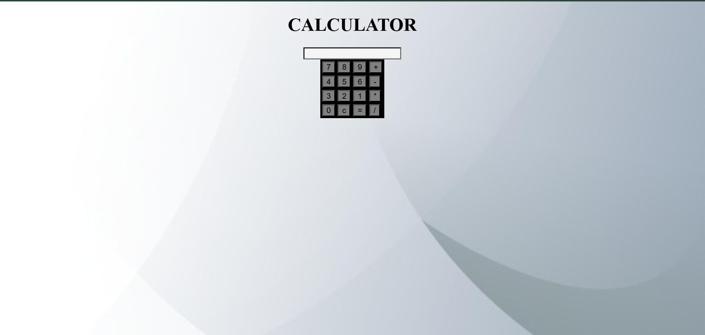

TEJA SANJUSHA IDDUM
I BELEIVE IN
EAT(); SLEEP(); CODE(); REPEAT();

ABOUT
To secure a challenging position in a reputed organization where I can apply my knowledge of Electronics and Communication Engineering, combined with my interest in software development, to design, develop, and implement innovative solutions while continuously enhancing my skills and contributing to organizational growth.
MY PORTFOLIO
Some of my best projects
PERSONAL BLOG - A blog where I pencil my own thoughts on drawing.
Image-map - JavaScript dominates web development, Python excels in data science and AI, Java powers enterprise and Android apps, TypeScript enhances JavaScript for scalability, andSQL (Structured Query Language) is the standard language for managing and manipulating relational databases. It’s essential for querying, updating, and organizing data, making it a critical tool for developers, data analysts, and database administrators.

Calculator - HTML: Provides the structure, including buttons for digits, operations, and a display screen. CSS: Styles the calculator, making it visually appealing with layouts, colors, and animations. JavaScript: Handles the logic for calculations, button clicks, and updating the display dynamically. Together, these technologies create an interactive and functional calculator for basic arithmetic operations.
TECHNICAL SKILLS
- HTML
- CSS
- JAVA SCRIPT
- PYTHON
CONTACT ME
📱-79812 38160
📧-tejasanjushaiddum@gmail.com